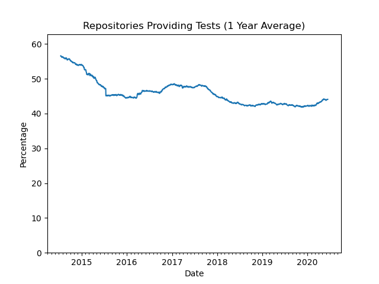

Continuous Integration With VUnit Action in 10 Lines of Code#
The other week, semiengineering.com published an article on open-source verification. It had one, rather obvious, conclusion.
Verification is required to answer the question, ‘Do you trust the piece of hardware you received?’
—Neil Hand, director of marketing for design verification technology at Mentor, a Siemens Business
Despite being obvious, IP providers often make it hard to gain that trust.
When you buy IP, you usually get a very simple verification environment. This enables you to run a few demo tests or check configurations. You do not usually get the entire verification environment.
—Olivera Stojanovic, senior verification manager for Vtool
This is not unique to commercial IPs. Our study of VHDL projects on GitHub shows that less than half of all projects provide tests at all, and the trend is declining (see Figure 1).

Figure 1. Repositories providing tests.#
So, what are the reasons for not providing tests with the IPs?
With complex IPs, they don’t want to provide you with the verification environment, which is too complicated and potentially may provide insights that they might want to keep from you.
—Olivera Stojanovic, senior verification manager for Vtool
Keeping secrets is not a reason for not providing tests with public projects on GitHub, as everything is open/public. However, it can be complex to create a user-friendly online verification environment that clearly shows what has been tested and the status of those tests. Thanks to VUnit Action this is now much simpler, as it provides a continuous integration flow with just 10 lines of code.
If you’re not familiar with VUnit, the following reading will set you up for the VUnit Action described in the next section.
VUnit Action#
GitHub’s continuous integration/continuous deployment (CI/CD) service is named GitHub Actions (GHA). It allows to create automated workflows for your repositories, which are defined through YAML files. Workflows can be triggered by any event, such as push, issue creation or publication of releases.
GHA provides virtual machines with GNU/Linux (Ubuntu), Windows or macOS. Hence, it is possible to create a custom CI/CD workflow using bash, powershell, Python etc. However, there are also predefined workflow tasks named Actions. Some Actions are provided by GitHub (see github.com/actions), and some are published in the GitHub marketplace. Nevertheless, any GitHub repository can contain Actions.
VUnit Action is a reusable Action, built on the GHDL simulator, and available in the marketplace (github.com/marketplace/actions/vunit-action). It helps you build a workflow for running your HDL testbenches, and then present the results.
To use VUnit Action for your project, you need to create a YAML file (some_name.yml) and place that in a directory named .github\workflows (located directly under your project root), in the default branch of your repository. The YAML file should contain, at least, the following piece of code.
name: VUnit Tests
on:
push:
pull_request:
jobs:
test:
runs-on: ubuntu-latest
steps:
- uses: actions/checkout@v2
- uses: VUnit/vunit_action@v0.1.0
Whenever someone pushes code to the project or makes a pull request, this workflow is triggered. First, the code is checked out using the checkout action. Then, the VUnit Action is triggered, to run the run.py script located in the root of your repository. If the VUnit run script is located elsewhere, you specify it in the YAML file:
- uses: VUnit/vunit_action@v0.1.0
with:
run_file: path/to/vunit_run_script.py
To build trust with the user community by clearly showing that you have tests up and running, we recommend that you add a badge/shield to the README.md of your project. It will show the latest status of you tests:
[](https://github.com/<user or organisation name>/<name of your repository>/actions)
Clicking the badge/shield will take you to a list of workflow runs, and then further to the results of those runs:

Figure 2. Presenting Test Results.#
The simple solution presented here will get you started and you can read more about the details in our documentation. Once you have that working there are a number of extra steps you can take and that will be the topic of the next post on continuous integration.